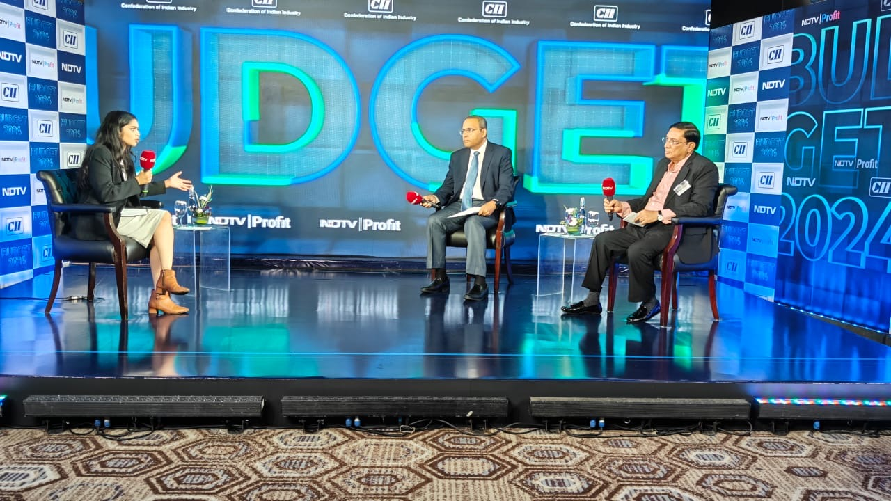
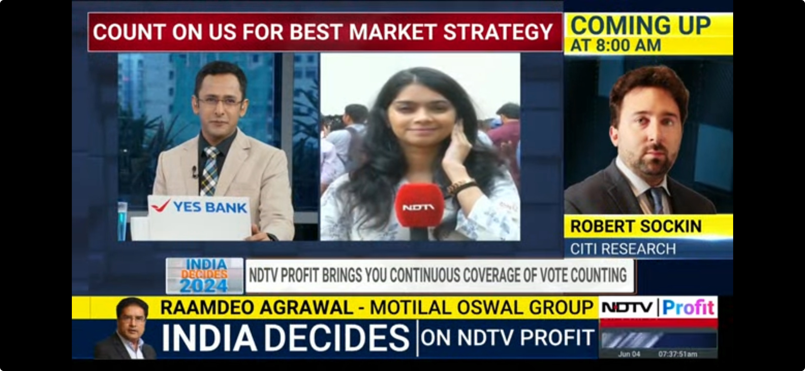
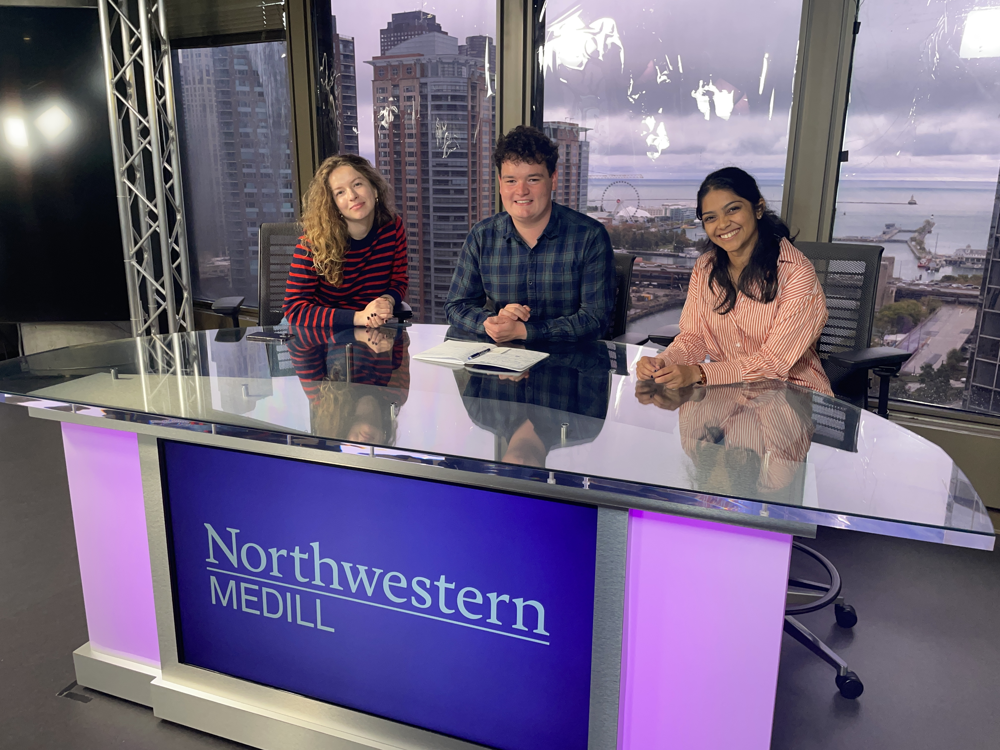

My Story
I was born and raised in southern India before work took me around the country. I started as a policy journalist in New Delhi covering government finances, international trade and finance policy for web and broadcast. I followed this up with a master's degree in investigative journalism from Northwestern University's Medill School of Journalism. I currently write on a host of business topics; most recently on land-use, economic development and commercial real estate in Northern Virginia. My interest in public records and investigative narratives inform my passion for business stories, but doesn't limit me to it. I've previously written for the Washington Business Journal, The Chicago Sun-Times, Milwaukee Journal Sentinel, Mindsite News, NDTV Profit and BW Businessworld.
My career experiences range across digital, broadcast, print and radio, making flexibility and adaptability my biggest strength. I'm a sum of all the cities I've lived in, and I firmly believe that a nose for newsworthiness and the persistence that goes with it are transferable skills across continents.
Memorable career moments





